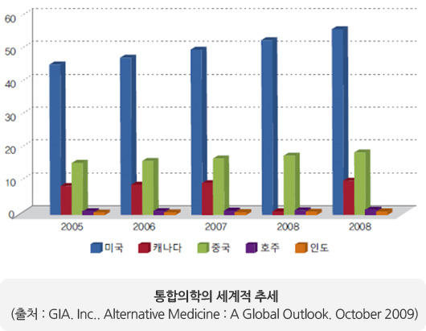
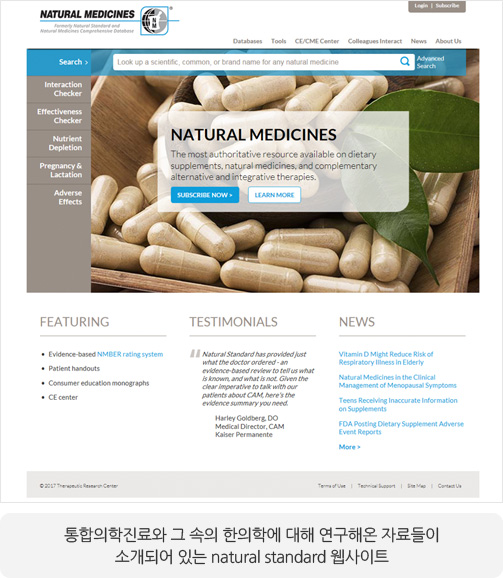
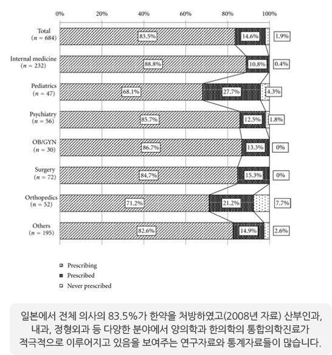
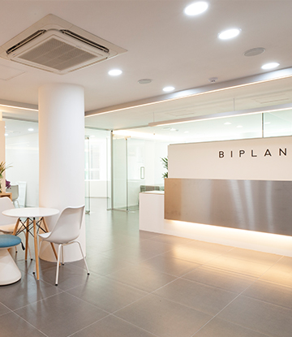

통합의학진료, 난치질환 치료를 위한
세계적 추세
세계 유수 병원들은 이미 난치질환 치료를 위해
통합의학진료를 시행하고 있습니다.
존스홉킨스 병원, 메모리얼 슬로언-케터링 암센터, MD 앤더슨 병원은 미국에서 가장 뛰어난 3대 암센터입니다.
그 중 MD앤더슨은 우리나라 대기업 총수가 치료받아 국내에서도 유명세를 타고 있는 매우 유명한 암센터입니다. 이들과 더불어
미국 최고 병원으로 뽑힌 메이요 클리닉에서도 현대의학으로 완치가 어려운 암치료를 비롯한 난치질환을 가장 효과적으로
치료하기 위해 각 분야의 전문가들이 모여 통합의학을 활용하여 치료의 수준을 높이고 있습니다.
침술가, 한약 전문가, 기공술 전문가, 음악치료가, 종양전문의, 내과 전문의, 사회복지사, 영양사 등 각 분야 전문가들이
한 환자를 두고 통합의학을 활용하여 최선의 의료를 시행하고 있습니다.
-

-
세계적인 병원들은
왜 통합의학진료에 주목할까요?
1971년 미국 닉슨 대통령은 암과의 전쟁을 선포하며 국립암센터를
설립하고 막대한 예산을 쏟아부었으나 실효를 거두지 못하자
1998년 NIH 산하 국립보완대체의학센터(NCCAM)를 건립하고
암치료의 방향을 통합의학으로 바꾸었습니다.
암을 비롯한 많은 질환에서 현대 의학이 한계를 보이고 있고, 치료의
부작용도 큰 경우들이 왕왕 있어 이를 극복하기 위한 대체의학들을
과학적으로 검증해 선별 운영하게 된 것입니다. 또한 검증되지 않은
대체의학을 무분별하게 수용하는 환자들의 부작용 피해가 커진 것도
과학적으로 검증된 대체의학들을 합리적으로 적용하는 통합의학의
발달을 가중시켰습니다.
-
세계적 통합의학이 주목하는
한의학적 진료
미국 NIH 산하 국립보완대체의학센터(NCCAM)를 비롯해
세계적으로 영향력이 큰 하버드대학, MD Anderson 병원,
메모리얼 슬로언-케터링 암센터, 존스홉킨스 병원, 최근 미국
최고 병원으로 꼽힌 메이요 클리닉 등이 한의학진료를 과학적으로
검증하고, 양약과 보완적으로 적용하거나 통합의학 진료매뉴얼로
운영해오고 있습니다. 이미 미국에서는 한약재와 한약에 대한
과학적 연구가 상당히 이루어졌고 통일된 평가와 통합의학적
활용 기준에 대한 정보도 적극 공유되고 있습니다.
[출처 : Fanghua Qi et al. The advantages of using traditional Chinese medicine
as an adjunctive therapy in the whole course of cancer treatment instead of
only terminal stage of cancer. Bio Science Trends, Vol 9. 2015.]
암뿐 아니라 척추, 관절의 통증부터 두통, 소화기 질환, 정신과
질환 등 다양한 질환에 통합의학을 활용하는 메이요 클리닉에서는
한약뿐 아니라 침술의 효능과 안전성에 대해서도 입증하면서
치료에 적극 활용하고 있습니다.
[출처 : Ran Pang et al, Complementary and Integrative Medicine at Mayo Clinic,
The American Journal of Chinese Medicine, Vol. 43, No. 8, 1503–1513]
-

-

-
아시아 통합의학을 발전시켜온
일본의 적극적인 한의학적 진료
일본의 경우 메이지 유신 이후 전통의학을 버리고 현대의학만을
신봉해왔습니다. 그러나 현재는 현대의학의 한계에 부딪혀
한의학을 다시 과학적으로 연구하고 적극 적용, 양방과 혼용하는
식의 통합의학적 진료를 꾸준히 시행해오고 있습니다.
1,000가지가 넘는 한약치료가 보험에 등재되었고, 암치료뿐 아니라
만성질환, 난치질환의 치료를 위해 내과, 산부인과, 정형외과 등
다양한 분야에서 의사들이 적극적으로 한약을 통합적으로 적용하거나
단독으로 한약만 적용하는 경우가 지속적으로 증가하고 있다는
통계자료들이 있습니다.
그러나 한국에서 통합의학은 제대로 자리를
잡지 못하고 오해와 천시를 받았습니다.
최근들어 대학병원들 일부에서 통합의학센터를 운영하기 시작하는
초기단계입니다. 하지만 암치료에 국한되거나 통합의학의 가장 큰 축인
한의학이 배제되어 있어 진정한 통합의학을 실현한다고 보기 어렵습니다.
만성질환, 난치질환 환자들은 통합의학과 한의학을 잘 알지 못하고
배척하는 다수 의사에게 소개조차 받지 못하고 있습니다. 또한 통합의학에
관한 연구를 진행할 체계가 현재까지 잘 잡혀있지 못합니다.
바이플랜 한의원이 우리나라에 맞는 통합의학을 세계의 과학적 근거를
바탕으로 먼저 시작한 이유입니다.

 비타민
비타민